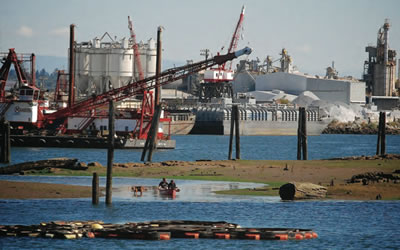

Page 1
The Lower Duwamish Waterway has served as Seattle’s major industrial corridor since the early 1900s, contaminating the Duwamish’s sediments with toxic chemicals from stormwater runoff, wastewater, and industrial practices.
